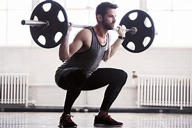

하체운동에서는 '알파이자 오메가'인 운동이다.
앉았다 일어나는 동작을 기본으로 하는데 허리와 무릎 각도가 중요해서 처음엔 숙련된 사람으로부터 자세 교정을 받아가며 배워야 한다. 단, 이때 전문가가 아닌 동네에서 운동 좀 한다는 아저씨한테 배우면 피 볼 수 있다. 될 수 있으면 교육 받은 전문가에게 배우는 것이 좋다. 특히 스쿼트는 사람의 체형, 특히 타고난 고관절 각도와 척추 및 관절 질병 경험에 따라 자세를 맞춰줘야 하므로, 남이 하는 걸 그대로 따라하려는 것도 위험할 수 있다. 이 문서만 읽고 대충 따라 하다가도 큰일 날 수 있다는 소리다.